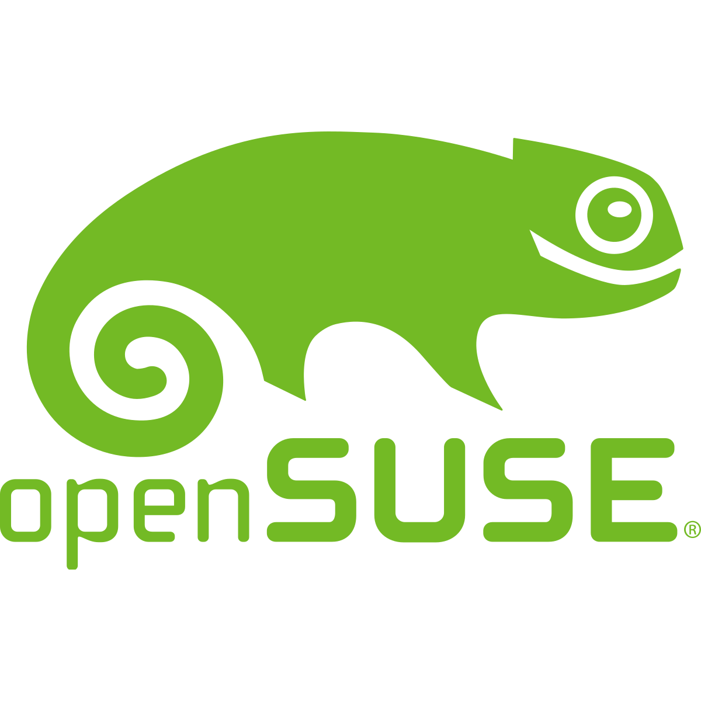

OPEN
SUSE
OpenSUSE. Es el sistema operativo orientado a los usuarios de software libre y abierto al desarrollo de nuevas funciones por su comunidad de desarrolladores
DESCARGA DOCUMENTACION

OpenSUSE. Es el sistema operativo orientado a los usuarios de software libre y abierto al desarrollo de nuevas funciones por su comunidad de desarrolladores
DESCARGA DOCUMENTACION